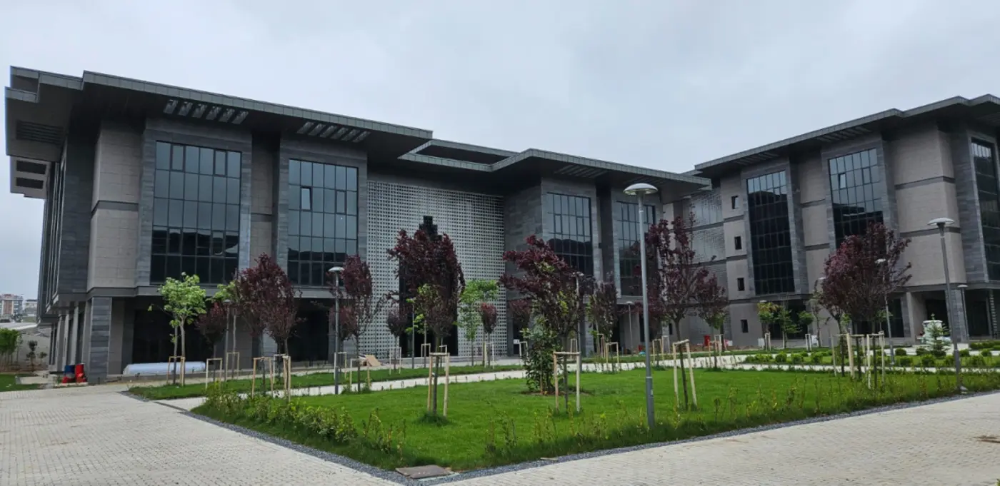

2024 — Devam ediyor
İşletme (İngilizce)
Marmara Üniversitesi · İstanbul · Lisans92/ 100 İngilizce Yeterlilik
Yönetim, iş geliştirme, pazarlama ve finans alanlarına yoğunlaştım; kulüp ve zirve organizasyonlarıyla derste öğrendiklerimi sahada uyguluyorum.
Öne çıkan alanlar
Yönetim
Pazarlama
Finans
İş Geliştirme